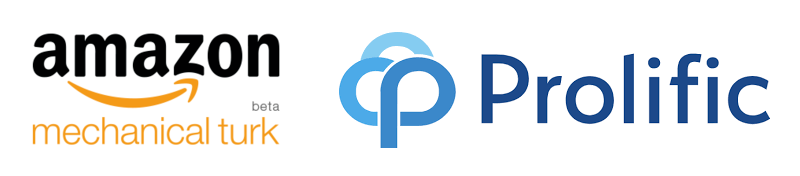
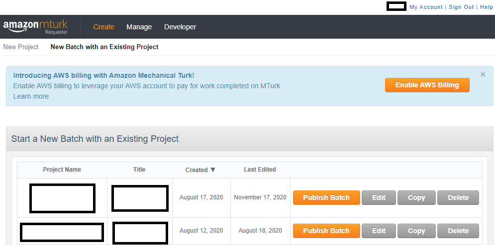
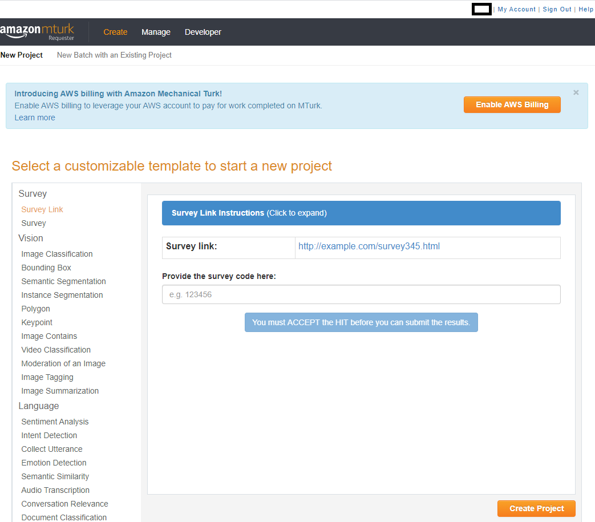
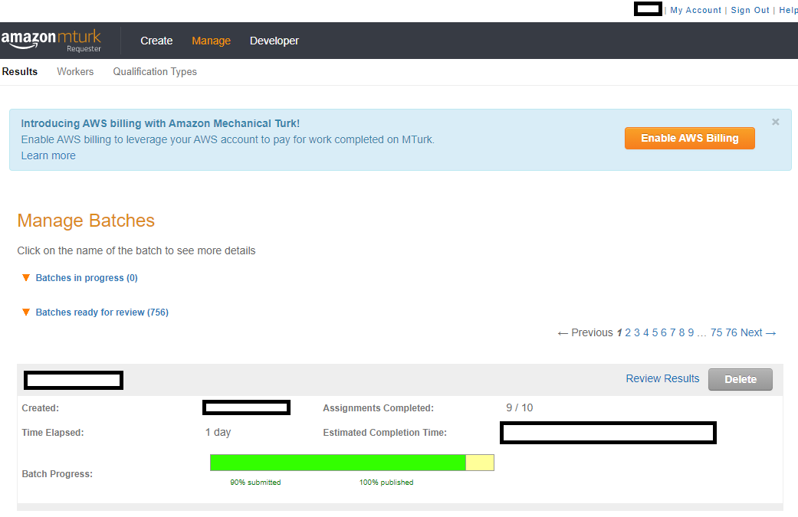
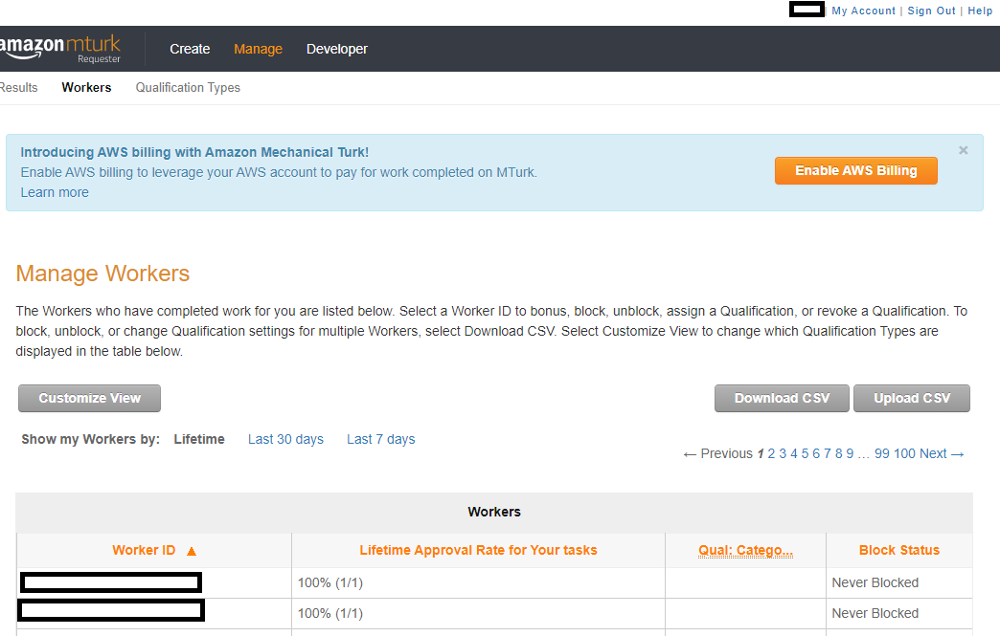
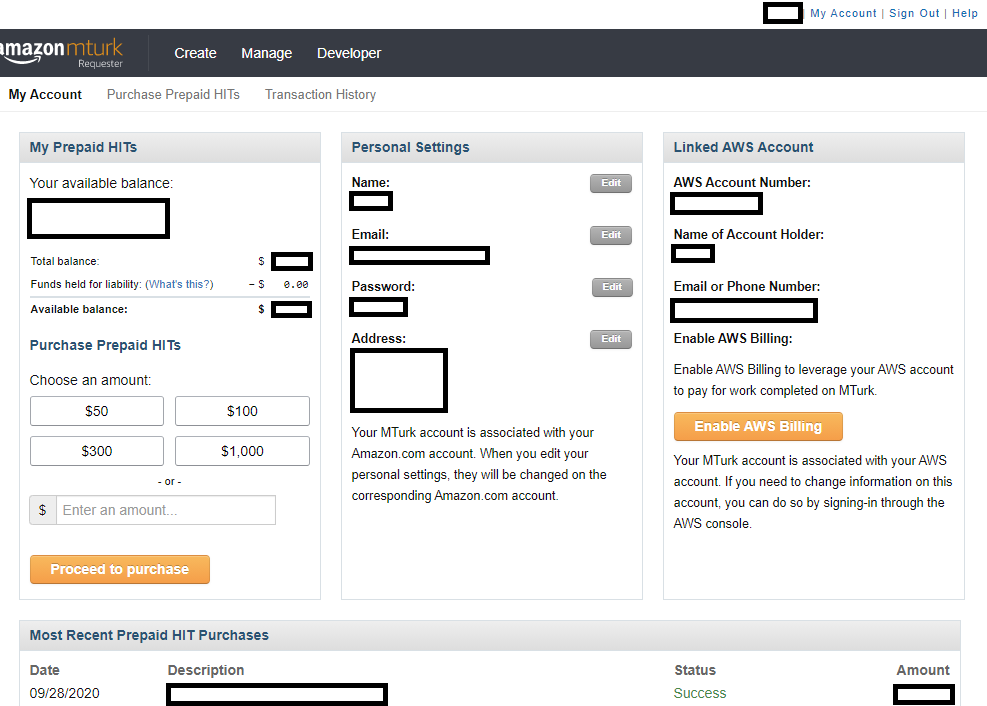
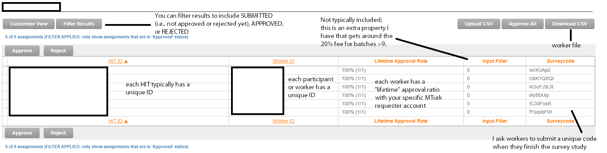
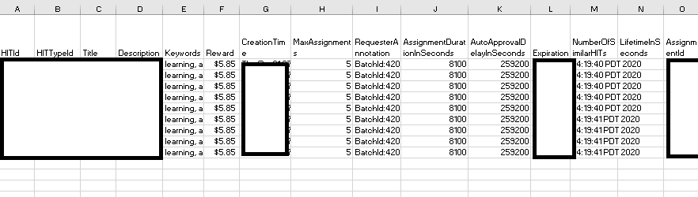
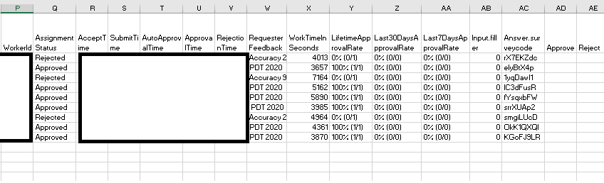

Module 1: Crowdsourced Experiments
- Identify the lingo and demographics of Amazon Mechanical Turk (MTurk)
- Describe the benefits and pitfalls of crowdsourced research
- Diagnose what sample MTurk experiments do wrong and what they should do instead
- Synthesize common tips for running MTurk participants into your research
Welcome!
This course is designed for any researchers - whether in academia or industry, or PIs, post-doctoral researchers, graduate students, undergraduate students, or post-bac RAs - who wish to use crowdsourced populations to run their social science experiments online. As part of this objective, we will go over the many ways one could program a survey or experiment, but we will not go over the basics of how to design proper surveys (e.g., social science research methods) or what makes for good experiments. We will also not cover every little detail about JavaScript, HTML, and CSS. This course is more applied and advanced than a standard Introductory level course, but we hope to nonetheless interest you in pursuing more advanced customization of experiments, websites, and more.
What are crowdsourced experiments?
Crowdsourcing, according to Wikipedia, is "sourcing model in which individuals or organizations obtain goods and services, including ideas, voting, micro-tasks and finances, from a large, relatively open and often rapidly evolving group of participants." For example, Wikipedia is a crowdsourced encyclopedia online, with participants from all around the world contributing to the body of knowledge (a common good). This repository is meant to be crowdsourced, as a Github page that others can edit in time as more information becomes available. That is, this course is self-paced for all students, but students can also become collaborators over time.
In the realm of research, as Stewart, Chandler, and Paolacci (2017) discuss, researchers use online labor markets to match interested participants who can earn money to complete research studies. There are a number of crowdsourced sites: Prolific, Lucid, Clickworker, Microworkers, and CrowdWorkers (see this paper for a discussion of crowdsourcing sites in Japan, like Crowdworkers). There are likely more than are listed here, although not all will be particularly well known (also sometimes called online panels). This particular course focuses on Amazon Mechanical Turk, one of the most popular crowdsourcing sites used in the United States (please also see Wishlist).
What is and who uses Amazon Mechanical Turk (MTurk)?
Stewart, Chandler, and Paolacci (2017) suggest that in 2017, 24% of articles in Cognition, 29% of articles in Cognitive Psychology, 31% of articles in Cognitive Science, and 11% of articles in Journal of Experimental psychology: Learning, Memory, and Cognition mention MTurk or another crowdsourced experiment site, highlighting that there is strong demand for using these platforms to recruit participants. This demand has likely only increased given work-from-home attitudes and the shift to virtual platforms during the COVID-19 pandemic, especially given the large benefits of crowdsourcing studies.
Why is MTurk so popular? Crowdsourcing sites like MTurk are simple to use, have great flexibility, and can recruit a lot of participants at a relatively cheap rate. Another major benefit is that crowdsourcing sites tend to yield results much faster than running participants in person. You can take a look at the Geographic distribution of MTurk participants. There is a pretty decent MTurk pool for researchers in the United States, and there are about 100K-200K unique participants on MTurk, with 2K-5K active on MTurk at any given time and about half of the population changing within 12-18 months.
In 2015:
- ~80% of the MTurk participants were from the United States, and the other 20% mostly from India.
- ~50% were 30-year-olds, ~20% were 20-year-olds and ~20% were 40-year-olds.
- ~40% were single, ~40% were married, and ~10% were cohabitating.
- The median household income was ~$50K per year for U.S. participants.
In other words, a typical MTurk participant lives in the U.S. or India, is 20-36 years old, earns $25,000-60,000 a year (depending on where they live), and thus matches the profile of a (procrastinating) graduate student or post-doc.
Of course, these demographics have likely changed to some extent. This app is meant to show you MTurk participant gender, year of birth, marital status, household size, and household income data on an hourly, daily, or day of week basis (see blog post).
Demographically, MTurk participants tend to be more diverse than college student samples, but are not representative of the U.S. population as a whole (Hispanics of all races and African-Americans are under-represented), and are younger, more educated, less religious, more liberal, and more likely to be unemployed or underemployed and have lower incomes than the population as a whole (see Stewart, Chandler, and Paolacci (2017) for review). Psychologically, MTurk participants score higher on learning goal orientation, need for cognition, and traits associated with autism spectrum disorders, report more social anxiety and are more introverted than both college students and the population as a whole, are less tolerant of physical and psychological discomfort than college students, and are more neurotic (see Stewart, Chandler, and Paolacci (2017) for review). (One paper, however, suggests that MTurk is more representative of the U.S. population than a census-representative web-panel in the evaluation of security tools and that differences between MTurk and the general public are due to differences in factors like internet skill.)
There are also important differences that come specifically from crowdsourcing. When using MTurk or other crowdsourcing platforms, you are usually posting your study/task into the 'ether'. Your study is available on a first come, first served basis, and that incentivizes certain behaviors. For example, some participants have become good at taking advantage of the platforms to find available studies and especially the ones that pay the best. In other words, participants may vary on their level of savviness and connectedness with other site participants, who may inform friends about a well-paying study. They'll definitely also vary in characteristics like personality, ethnicity, mobile phone use, and level of experience as a function of the time of day when a study is posted. Below in the Unknown Frontiers section, I discuss the impact of COVID-19; one potential impact is the particular demographics of your study. Moreover, as stated above, MTurk has both a U.S. and India population; at certain times of day, the U.S. population is more likely to be asleep, while the Indian population is more likely to be awake and active, and vice versa (see demographic app targeter above for an example). Arechar, Kraft-Todd, and Rand (2017) have suggested that participants who do studies on the weekend and later in the night are less experienced with online studies. Participants who complete a study early may also differ personality-wise from those who complete this later--although this may not be specific to MTurk or crowdsourcing. I was (informally) told that this is also true of psychology pool participants, who are more conscientious earlier in the semester than later, when we're closer to the deadline for participation.
You can also imagine ways in which this crowdsourcing behavior might impact design considerations. If participants are searching for tasks to complete, especially ones that are well-paying, they are also likely to prioritize studies that are not long and arduous--and as researchers, we have to take this into account. That means crowdsourcing tasks tend to be shorter. Participants who are doing online studies are also likely to be multitasking (e.g., not being alone, watching TV, etc.). That may differ from in person studies in a lab, but that may also depend on the extent to which a lab enforces a 'no-phone' rule etc. That doesn't mean behavior isn't similar (more on that in a bit). But it does mean that your instructions have to be REALLY clear. In person participants can ask you questions if they don't understand what they're supposed to do; online participants cannot.
How to use Amazon Mechanical Turk
To use MTurk, you will need to become familiar with the lingo of the site.
Worker - Participants on the site; workers will complete a "HIT" in exchange for compensation.
Requester - You, the researcher; requesters will post a "HIT" for workers to complete.
HIT (Human Intelligence Task) - The study/task; the requester posts a HIT for workers to complete.
Batch - A HIT is posted in "batches". Amazon charges a 20% fee for batches of greater than 9 HITs (meaning 9 participants), unless you use an additional trick (more on that later). If you want to run 18 people, you'd likely post 2 batches of 9 HITs.
Approval/rejection - When a worker completes a HIT, requesters can choose whether to approve or reject the HIT. Approving means you're compensating the worker; rejecting means you're NOT compensating the worker. I approve almost all HITs. If I reject a HIT, it's usually because someone is at or below chance level in my cognitive task, suggesting they didn't even try or were button mashing.
HIT approval ratio - Total Approved HITs / Total HITs completed. According to Stewart, Chandler, and Paolacci (2017), until a worker completes 100 HITs, a worker has a 100% approval rating. Workers are very invested in maintaining high HIT approval ratios, because they can be disqualified from certain HITs if their approval ratio is too low.
Reward - The amount of money/compensation workers receive after their HIT is approved. Note that Amazon takes at least a 20% cut on the reward rate. If you pay a worker $3 to complete your HIT, it actually costs $3.60 per participant.
Qualifications - Criteria that requesters can impose on a HIT and that determine worker eligibility to accept a HIT. Basic Qualifications (accessible to all requesters) include Location, # of HITs completed, and HIT approval ratio (e.g., restricting to U.S. workers who've completed at least 1,000 HITs and have a >95% approval ratio). Premium Qualifications (i.e., Amazon charges requesters an extra 20% for these) include other sorts of demographics (e.g., "18-29" age range). Requesters can also create their own Qualifications, like ensuring that workers don't do their task more than once.
TurkOpticon & TurkerView - Sites where workers can post reviews of a requester + HIT (TurkOpticon) or a particular HIT (TurkerView). Generally speaking, I think folks have transferred over to TurkerView, as I have more reviews on that site than I do on TurkOpticon. Also, generally speaking, my reviews are more favorable on TurkerView, so there may be a split between who uses what site. TurkerView also includes a forum for workers to discuss HITs.
CloudResearch, Prime Panels, MTurk Toolkit - CloudResearch is (I think) a subsidiary of MTurk, what used to be "Turk Prime." CloudResearch has a MTurk Toolkit that allows you to customize the use of MTurk features, such as particular demographic features, and has a much nicer graphical user interface than MTurk (e.g., you can email participants with this interface, whereas on MTurk, you have to use a special programming interface - more on that in Module 4). Prime Panels is a research service where other folks who work at Amazon will recruit your participants for you. This is particularly helpful if you want to recruit groups that you cannot reach just by using the Toolkit. Both Prime Panels and MTurk Toolkit cost more to use than MTurk at large, because they are specialized sites.
Block - Requesters can block workers from doing any of their future HITs. After an unspecified number of blocks, workers are banned from the site. I would HIGHLY recommend NEVER blocking a MTurk worker unless you believe they have violated the site's standards (e.g., by having more than one account). There are ways that you can ensure people do not do your task again if you find their work unsatisfactory (e.g., Qualifications)--and you can do that WITHOUT adding a "negative mark" to their account. Since we do not know how many blocks result in expulsion from the site (MTurk is not transparent about this), it is better to err on the side of caution and humanity.
At this point, you may be wondering where MTurk even is. There are two sites: the main regular site and the developer sandbox site where you can sign on as a requester or worker. The sandbox site looks identical to the main MTurk site except for the large orange header at the top. That means when you're ready to post your HIT, you can get the survey link code from your project in sandbox and thus make your project look the way you want before posting to the main site.
Let's take a look through the site. Below we have screenshots for "Create -> New Batch with an Existing Project", "Create -> New Project", "Manage -> Results", "Manage -> Workers", "Manage -> Qualification Types", and "My Account" page (all screenshots set to display only on xl screens). The Developer page essentially links to the sandbox page and walks you through ensuring you can use the sandbox site to ensure your task looks OK.
{kind=link}
{kind=link}
{kind=link}
{kind=link}
{kind=link}
Above, we can see what the site looks like when you already have Projects created. The site will tell you when you created and last edited the project and let you immediately publish a batch for the project, edit its settings, copy the project (which could be useful if you like your layout), or delete the project. MTurk workers will only see the Title of your project, but not your Project Name, which is only seen by you.
Above, we can see what the site looks like when you need to create a new Project. There are several templates available, depending on what you might need. Most frequently, in the social sciences, we will use the Survey Link or Survey option, and I will go over editing those templates in the typical social science tutorial.
Above, we can see what the site looks like when you've published a batch. When you're still waiting for workers to finish your study, the batch is in the "Batches in progress" section. When you've either canceled the project or workers have all finished the project, the batch will move onto the "Batches ready for review" section.
Above, we can see what the site looks like when you're looking at particular workers. You might find that you need to bonus one particular worker, and you lost track of where they were in a batch. You might have forgotten to update a particular worker's Qualification. You can find the worker here, along with their lifetime, 30 day, and 7 day approval ratio; that would tell you how often you've had a particular worker do your tasks. Your total worker file can also be downloaded as a .csv file and uploaded as well. This is how you would "update" Qualification scores on a massive level.

Above, we can see what the site looks like when you're looking at the Qualifications you've created. Each qualification has a particular name/code and a unique ID, plus a description so that you and workers know what the Qualification means. As stated above, you can either click on a particular worker and assign them a Qualification or you can download your worker file .csv and then put a value in the column associated with each Qualification. As you can see above, these Qualifications are meant to help you exclude participants who have already done past studies of yours (whether they're good workers who you just don't want as repeats or bad workers that you never want to have do your studies).
Finally, above, we can see what the site looks like in reference to your own account page. Below, I will mention how to create your own account. Here, you can see how much money you have in your account as well as your account's settings and login information. You can either put a prespecified amount of money into your account or when you're creating a batch, simply pay for the exact amount of money associated with that batch. You will need to keep track of the transaction history if you need to turn in receipts to a particular funding institution or accounting.
What does the output look like? Well, it sort of depends on what your particular task is and whether you're relying on what Amazon provides you as an output vs. having a web server of your own. Here is a screenshot of "manage batches" and a particular batch for survey link project (shown only on xl screens):
{kind=link}
In the above image, you can see even more lingo to learn! First, you can see that each worker and each HIT posted typically have unique identifiers; I blocked these out of the screenshot, because you could then identify who did my task. Each worker has a lifetime approval ratio associated with a particular requester's account. In the above screenshot, all of workers show 1/1, indicating they'd only ever done one HIT for me, and I approved them on this HIT. You can filter out the HIT results to look at workers who you've already approved or rejected, or folks who have just submitted the HIT (and therefore need you/the requester to approve/reject the HIT). The screenshot above is filtered for approved HITs. There are also 2 particular fields that I have included: surveycode, which is a function of the particular project I run on MTurk where I ask each worker to submit a unique code that they receive at the end of the survey as proof of survey completion, and Input.Filler, which is a part of the method I use to get around the 20% fee for batches >9. Finally, you can see options to "Upload CSV" and "Download CSV". The 'csv' file is a file that lists all the workers in your particular batch and could include other data, depending on how you've coded your study. Here is what this particular .csv (comma separated values) file looks like (shown only on xl screens):
 {kind=link}
And even more lingo! Each person has a unique HIT ID, a unique Worker ID, and a unique Assignment ID. I will go over these terms in more depth in the typical social science project section. Title is the name of your study; description is a brief blurb that workers will see before clicking on your HIT; keywords are the few terms workers will see related to your work. Creation Time is when you posted your batch; expiration is when the batch will naturally expire. Assignment status indicates whether the requester has rejected or approved the HIT, or whether they have yet to do so (i.e., submitted). SubmitTime is when the worker submits their HIT; autoapproval time is when a worker would be automatically approved for submitting the HIT. Approval/Rejection time are when you approved or rejected the HIT, and if you do reject a HIT, you are required to tell the worker why. That is listed in the Requester Feedback column. In addition to a Lifetime Approval Rate, you also are shown the Last 30 Days Approval Rate and Last 7 Days Approval Rate, which may help you notice if any eligibility criteria (so that people don't do your task more than once) is working. For example, if it wasn't and assuming that you've only posted the same study in the last seven days, you might have a worker with 1/1 in the last 7 days approval rating in addition to the current HIT, suggesting your exclusion method did not work. The rest of the columns are all various durations and other information you adjust when creating your project. The most important information is the HIT ID, worker ID, and assignment ID as these unique identifiers will make it possible for you to link different sources of information (e.g., data on your survey to data on the actual MTurk interface).
You may be wondering: well, what's the point of downloading these .csv files? Sometimes people code their studies so that these files have their data; that would amount to an extra column, much in the way that my study has an "Input.filler" column because I do something extra to my project code. Sometimes, you may also accidentally reject someone's HIT or learn that they experienced an error while doing the study, and you want to compensate them. If that's the cas, you would just put an "x" in the Approve column at the end there and then click "Upload CSV" on the MTurk interface, inputting your file. That helps you undo the error you committed.
Well, with so much information, what sorts of things might you report after running an MTurk study? You should definitely report 1) any qualifications you've imposed and 2) any properties of your particular HIT (reward, stated duration). You may also want to report the time of day you posted HITs and the date/days on which you posted HITs, especially if researchers try to meta-analyze how much these may impact results in the future. Here is an example description of using MTurk in a published study:
"Eighty-one Amazon Mechanical Turk (MTurk) workers consented to participate for a $3.85 ($0.13/min) fee in accordance with the policies of the Duke University Institutional Review Board. Nine participants were excluded because of poor accuracy on the LP (<65%; see instruction paragraph below) and nine participants were excluded because of incorrect category-response associations on the post-test questionnaire (see post-test section for more details), resulting in a final sample size of sixty-three (mean age = 32.1, SD = 8.7; 31 female, 32 male; clustered n = 31, non-clustered n = 32). This level of exclusions is consistent with research suggesting that attrition rates among web-based experiments varies between 3 and 37% (cf. Chandler et al., 2014).
Workers were told the approximate length of the study and the number of the tasks that they had to complete. Workers were asked to take no longer than 4 min for any of the breaks that occurred during the study (e.g., between task phases). Finally, they were also informed that they needed to get above 65% accuracy on the LP for compensation, and that if they got above 90% accuracy, they could earn a flat $1 bonus. Nine workers earned the bonus. Workers who participated in one experiment were explicitly preempted from participating in the others. All exclusion criteria remained the same across experiments."
What's wrong with this description? Well, it gives you a sense of what the HIT page looks like, but a more transparent version would have included (e.g., in the Supplementary Text) the exact preview of the HIT and mentioned what days and times on which participants were run. This was one of the first studies I'd run, and I hadn't included a Location: United States Qualification, which I now do (especially since NIH grants are typically based on U.S. census reports, with certain demographics specified). Personally, I also tend to run participants between 9 a.m. to 5 p.m. EST and cancel any "batches" that aren't finished by 5 p.m. EST to ensure that participants who are not in my desired location but are getting past Amazon's Location Qualification will not participate in the study. However, I didn't include this guideline in the above description, either, and that is a problem if someone wanted to directly replicate my study.
Amazon Mechanical Turk accounts
How do you sign up for an MTurk account?
....
Should you sign up for your own account or an account that represents your lab at large?
....
....
Designing Online Studies
....
....
Running social science research on MTurk
....
....
....
....
....
A typical social science project on MTurk
....
Screenshot of the MTurk page.
Yes, their interface is pretty terrible. It is possible their interface is so bad because they want you to use their more expensive features, like Prime Panels and the MTurk Toolkit. Who knows?
....
Special qualifications and properties on MTurk
....
....
....
....
....
Additional Considerations
....
....
Diversity and Inclusion
From Chandler, Rosenzweig, Moss, Robinson, and Litman (2019):
"...although MTurk is often celebrated as offering more diverse samples than college student subject pools, this is true primarily because college student samples are extremely homogeneous. Despite increased diversity, MTurk workers still look very little like the US population. MTurk workers are overwhelmingly young, with 70% of the MTurk population being below the age of 40, as compared to just 35% in the United States as a whole. Furthermore, there are very few participants above age 60 on MTurk. Reflecting differences in age and birth cohort, MTurk samples are also more liberal, better educated, less religious, and single without children, when compared to the US population (Casey, Chandler, Levine, Proctor, & Strolovitch, 2017; Huff & Tingley, 2015; Levay, Freese, & Druckman, 2016)."
....
Payment is an ethical issue (Cantarella and Strozzi, 2018). Moss, Rosenzweig, Robinson, and Litman (2020) found that MTurk participants don't found most requesters abusive or MTurk stressful and that they appreciate its flexibility and the financial incentives, but that does not absolve researchers from paying an ethical amount for our studies to be performed online.
....
....
....
Tips for running MTurk participants
Some of these tips and tricks are informed by my own experience and some are informed by various tutorials (Mason and Suri (2012), Buhrmester, Talaifar, and Gosling (2018), Morrissey, Yamasaki, and Levitan (2019), Bauer, Larsen, Caulfield, Elder, Jordan, and Capron (2020), Hauser, Paolacci, and Chandler (2018), Robinson, Rosenzweig, Moss, and Litman, (2019)).
....
....
....
If your task is dependent on workers being fluent or native in English, Hauser, Paolacci, and Chandler (2018) suggest 1) offering your task in different languages (to ensure participant diversity) or requiring participants to fill out a language assessment pre-screen; 2) examining responses to open-text questions as a way to detect non-native English; 3) restricting eligibility of the survey to people most likely to know English (e.g., Location: United States); or 4) using any of the tips mentioned earlier for inattentive responding.
Frequently Asked Questions
Is MTurk comparable to traditional samples?
Yes. ...
Some recent research has also suggested some important differences with other online research panels (see Chandler, Rosenzweig, Moss, Robinson, and Litman, 2019 for commentary): e.g., "Prime Panels participants were more diverse in age, family composition, religiosity, education, and political attitudes. Prime Panels participants also reported less exposure to classic protocols and produced larger effect sizes, but only after screening out several participants who failed a screening task." This article also goes over trade-offs in using online panels vs. a crowdsourcing site.
What sorts of studies can be run on these crowdsourcing platforms?
A lot. For instance, if you need to run a longitudinal or multi-day study, you can. Bejjani*, Siqi-Liu*, and Egner (2020) asked participants to perform an attention task two days in a row and yielded a retention rate of 92% and 77%. Other multi-day studies have successfully yielded response rates of ~38%-75% (2 week daily diary study on alcohol behaviors: Boynton & Richman, 2014; 2 month response rate: 75%, four month response rate: 56%, eight month response rate: 38% for a study testing longitudinal capacity on MTurk; see Daly & Nataraajan, 2015). Shapiro, Chandler, and Mueller (2013) found an 80% retention rate for a clinical study asking participants to return one week after the initial survey. Even on Prolific, another crowdsourced site, researchers were able to find a retention rate of 77% over the course of a year.
What is listed here is not the only type of study to find on MTurk. For example, Qureshi et al. (2019) showed MTurk workers the results of medical tests to examine how well people (patients) understand what they're seeing in terms of diagnoses. You're mostly limited by what you can post online and what you can reasonably ask participants to do within ethical guidelines. You can find more suggestions at Stewart, Chandler, and Paolacci (2017) (e.g., infant attention, economic games, crowd creativity, transactive crowds, participants as field researchers, mechanical diary, time of day, crowds as research assistants, etc.).
OK, so you've highlighted a bunch of positives. What are the negatives of using a crowdsourcing site?
First, there are professional participants. On MTurk, there may be a repeat of participants between labs, and you don't necessarily know the extent to which people are aware of your study's purpose (see Unknown Frontiers section below). Moreover, having more experienced participants may result in an inability to generalize your results. Generalizability is something you should especially consider with this population (see, for example, the Diversity and Inclusion section).
Second, you cannot control the environment under which participants take your survey. That is the nature of the internet: participants may be watching TV or distracted by a child who got a nosebleed (yes, I have received this email). I do not know the extent to which this is specific to MTurk or really, any sort of crowdsourcing site. However, there are solutions for inattentive responding and insufficient effort: incentivizing paying attention (with a bonus or following principles of web survey design), excluding participants who don't pay attention, and more (see Tips and Tricks section). Moreover, a number of MTurk studies have found effects that rely on differences observed at the millisecond level, just as they are in college students (see above), which suggests that inattentive responding is not as large of an issue (for some studies, at least).
Third, MTurk allows requesters to pay however much they want (no minimum payment rate). This means that exploitation of workers could be a big thing, and really payment is a large ethical issue that you need to consider when running your study. Moreover, payment can impact how quickly your results appear (i.e., how much participants want to do your study) and potentially your self-selected sample characteristics, although some work has suggested that data quality is independent of reward size (CITATION NEEDED).
Fourth, another ethical consideration: participants do not know if they're subject to deception. This may mean that the participant pool is generally more suspicious and less trusting of studies (i.e., this study is spam!), especially without clear cultural guidelines for a crowdsourcing site.
Fifth, sometimes, you may have duplicate participants with separate accounts. Generally, these are frowned upon and not permissible by the site standards (where each person is meant to be assigned one unique identifier). However, I have had folks with multiple accounts (and the exact same IP addresses and/or duplicate reviews/emails). And, a limit on multiple accounts doesn't necessarily stop people who are within the same household from doing the same study. Two computers may have separate IP addresses, and your participants--while perhaps not discussing the particulars of your study--may still discuss how 'annoying' or 'amazing' your study is. That is an effect that's hard to measure and hard to really quantify its impact. Even if you collect IP addressees, this may not tell the full story.
Sixth, there may be demand effects. On MTurk, you can reject work that you think is subpar. On one hand, this is a good deterrent against the concern regarding inattentive responding and insufficient effort--no participant wants a bad approval rating. However, this may mean that workers then try to provide you with what they think you want rather than what they actually believe. One such example was the higher rate of "malingering" or reporting a high frequency of psychological symptoms that are meant to be rare (Shapiro, Chandler, and Mueller, 2013). As the authors suggest: "One possibility is that these participants perceived distress to be of interest to the researcher and thus reported high levels of distress for a variety of reasons that range from selfish (e.g., gaining access to future surveys) to altruistic (e.g., being a cooperative research participant; for a discussion of these issues, see Rosenthal & Rosnow, 2009)."
Finally, seventh, some participants may get around the requirement for a U.S.-based address. One solution is to collect IP addresses, but some participants may still hide their IP address through virtual private servers (see Dennis, Goodson, and Pearson, 2018). You will want to have a protocol in place that addresses what to do in these scenarios.
If I did want to measure Reaction Times (RTs), how accurate can I get?
...
Applied Exercise: What did these experiments do wrong?
....
....
....
....
....
Unknown Frontiers
Perhaps one of the most unknown consequences of using crowdsourced samples is the effect of crowdsourcing on the experiment. At any time, a participant may catch your experiment ... (but psych pool is similar to MTurk anyway?)
For example, a lot of older psychology research ... Now, many folks have put forward studies showing that effects are similar between MTurk and psychology pool participants (example), but that ... When crowdsourcing, however, ... One study examined whether repeated exposure to the Cognitive Reflection Test
Outstanding questions:
1. To what extent does nonnaivete impact your effect of interest? Do you know this for your particular field and effect?
This seems to depend somewhat on your particular field. For example, one of the effects that I study, the Stroop effect, occurs when people automatically read ... (named after J.R. Stroop). The effect is subject to a number of factors (e.g., familiarity with the language being used to create conflict between reading and following instructions), but the effect is also so large that most participants show a Stroop effect. On the other hand, crowdsourcing can...
2. How has the COVID-19 pandemic impacted recruitment?
Word of mouth has suggested worse data quality or the same as usual -- which is not all that different from pre-COVID-19 -- and Lourenco and Tasimi (2020) speculate in a commentary that the COVID-19 pandemic may make samples less diverse and generalizable, given the potential paucity of internet access. In terms of quantitative research, a couples of papers have attempted to address this question. For example, Arechar and Rand (2020) analyze the over ten thousand responses from 16 studies run on MTurk between February 25, 2020 and May 14,2020 relative to previous lab studies and find that "participants are more likely to be Republicans (traditionally under-represented on MTurk) and less reflective (as measured by the Cognitive Reflection Test), and somewhat less likely to be white and experienced with MTurk. Most of these differences are explained by an influx of new participants into the MTurk subject pool who are more diverse and representative - but also less attentive – than previous MTurkers." Meanwhile, Moss, Rosenzweig, Robinson, and Litman (2020) examined small samples of participants from CloudResearch run through all the months of 2019 and from January-May 2020 and found similar demographics across the participant samples in terms of income, gender, and race. Note, of course, that these folks are all affiliated with "Prime Research Solutions", which is an extension of the MTurk platform (the company that owns CloudResearch). Personally, I can say that I've had a lot more folks who do not even try in my experiment (i.e., higher exclusion rates), but that could also result from my particular approach to MTurk.
3. To what extent does what I wrote above about MTurk participants apply to all crowdsourced participants?
Are they the same psychologically? Is this a characteristic of participating in crowdsourced pools, or is it specific to Amazon Mechanical Turk? There are few studies that compare across crowdsourcing platforms in terms of population based characteristics (there is, of course, Prolific's blog post) - for one, they would need to recruit across different regions for comparison, and I believe that currently, most platforms have a "strongest" area (like MTurk with the US, Prolific with Europe; see Wishlist page). Peer, Brandimarte, Samat, and Acquisti (2017) compared Prolific, MTurk, and CrowdFlower, and found that participants on CrowdFlower and Prolific were more naive, more diverse, and less dishonest than MTurk participants (among other characteristics) (study has been replicated by Adams, Li, and Liu (2020)). Gordon Pennycook has made a few comments about how Prolific and Lucid compare for politics-related studies (Twitter thread), but beyond informal commentary, this will need to be examined in the future. For instance, one thing that is unclear is the extent to which specific policies on each crowdsourcing sites are attributable to population differences vs. a particular site simply being more popular (for certain kinds of studies etc.).
Test Yourself:
Assignments:
- Knowing the ethics of using crowdsourcing, now write a sample IRB (Institutional Review Board) or set of internal guidelines on *how* you plan to use the site. For example, determine an ethical amount of pay; how long you expect your study (or studies) to take; what you'll have participants do; what your interface with participants will look like; who you plan to recruit, etc.
- Knowing what you do about crowdsourcing, determine what you need for your online study: what are the conditions? What will you ask participants to do? What sorts of things will you need the code or survey to do? What are the qualifications or characteristics you want your participants to have? Then write out instructions for your study and identify areas where MTurk workers could get confused. You may then want to gather the opinions of others as to what could be improved (see next Module for more details).
- Create a preregistered plan for your project that includes the above, incorporating things like the qualifications you've imposed, properties of the HIT preview, the duration of your HIT, payment amount, time of day and date for your batches, etc. One way we can determine the extent to which studies from crowdsourced populations generalize is by reporting all the details of a study and meta-analyzing their impact.